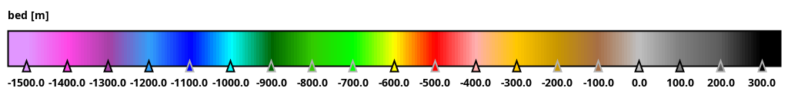
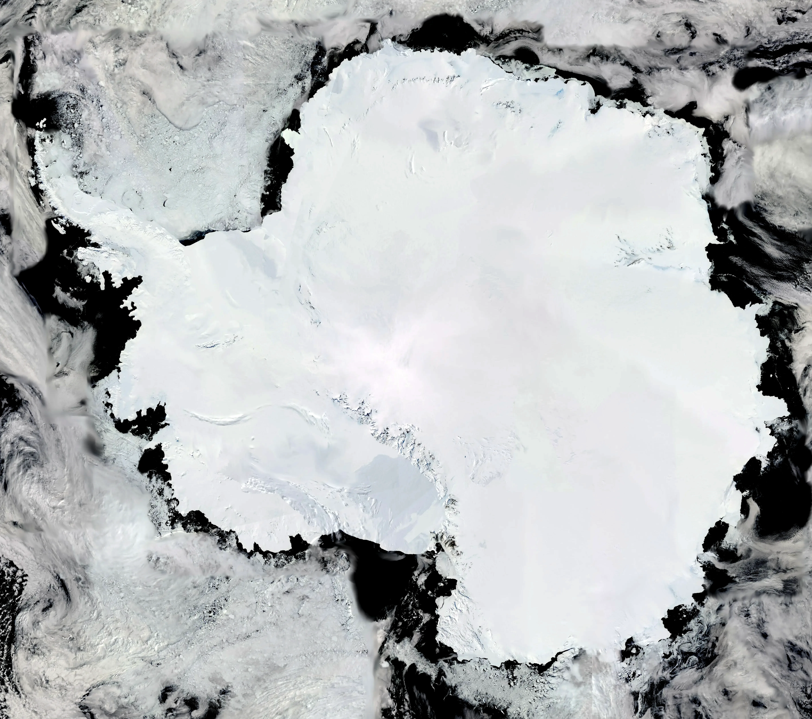
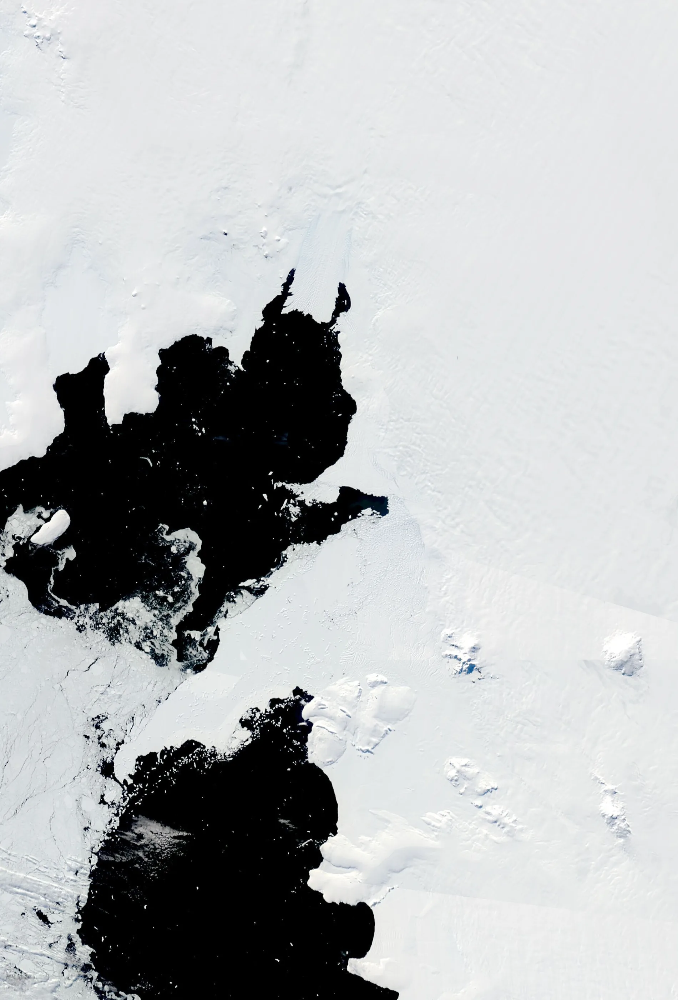

Antarctica Bedrock Elevation
Colour Image Composite: 2024-2026


Western Antarctica
Colour image: August 2026

About This Visualization
Explore the hidden topography beneath Antarctica's ice sheet using this interactive bedrock elevation visualization. By overlaying high-resolution satellite imagery with NASA’s BedMachine Greenland dataset, users can dynamically compare surface features against subglacial terrain.
Key Features:
- Interactive before/after comparison slider for precise alignment
- Adjustable bedrock opacity to isolate topographic details beneath ice cover
- High-resolution panning across Western Antarcica
Data Sources:
This visualization combines NSIDC MEaSUREs BedMachine for subglacial elevation modeling with Terra satellite imager. Temporal coverage spans 2024–2026, enabling assessment of ice sheet dynamics and bedrock interactions.
Morlighem, M. (2025). MEaSUREs BedMachine Antarctica (NSIDC-0756, Version 4). [Bed]. Boulder, Colorado USA. NASA National Snow and Ice Data Center Distributed Active Archive Center. https://doi.org/10.5067/POJQI54A45HX. [06/06/2026].
Terra / MODIS from NASA Worldview.